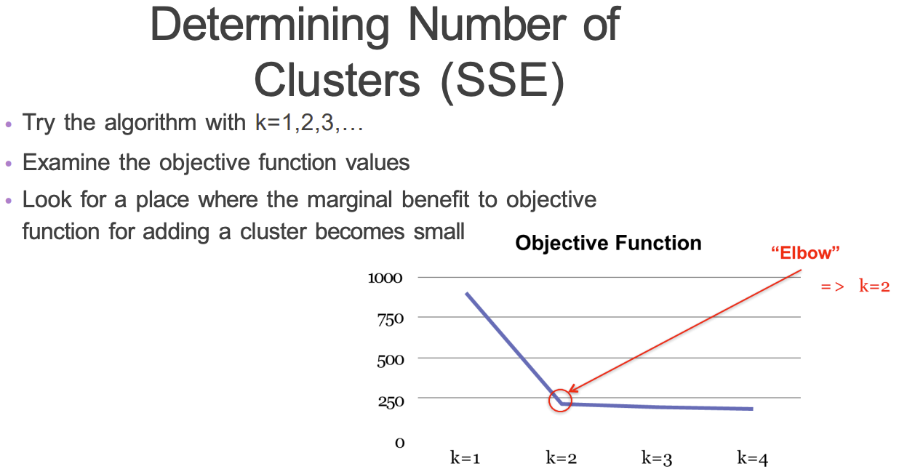

Code
# library(gridExtra)
# library(ggplot2)
# grid.arrange(
# grobs = list(
# hist(USArrests$Murder),
# hist(USArrests$Assault),
# hist(USArrests$Rape),
# hist(USArrests$UrbanPop)
# ),
# ncol = 2
# )Clustering is an unsupervised approach to modeling where the goal is to partition the data into groups.
There is no one-size-fits-all solutions, but there are good and bad cluster solutions. No method works best all the time. Keep in mind that clustering uses ALL the variables you provide it and clusters should add some business value.
Hard clustering is characterized by objects only belonging to one cluster. Fuzzy clustering is characterized by objects having the capability to belong to more than one cluster (usually with some probability).
Hard:
Fuzzy:
Hierarchical clusters form a tree so you can visually see which clusters are most similar to each other. Flat clusters are created according to some apriori process, usually iteratively updating cluster assignments.
Hierarchical is expensive when you have a large dataset.
K-Means revolves around using centroids. Centroids are “centers of clusters” or the means of a group of observations.

With K-Means we are trying to minimize the sum of squared distances from each point to its cluster centroid.
\[ \sum_{C_k}\sum_{x_i \in C_k} \lVert x_i - c_k \rVert^2 \]
How can we determine the number of clusters we should use?
We can use an “elbow” plot to find a place where the marginal benefit to objective function for adding a cluster becomes small.

Advantages:
Disadvantages
You will need to do data epxloration before trying to cluster the data.
You can try clustering on original data or you can try it on PCA of the variables, particularly if the data is big.
# library(gridExtra)
# library(ggplot2)
# grid.arrange(
# grobs = list(
# hist(USArrests$Murder),
# hist(USArrests$Assault),
# hist(USArrests$Rape),
# hist(USArrests$UrbanPop)
# ),
# ncol = 2
# )